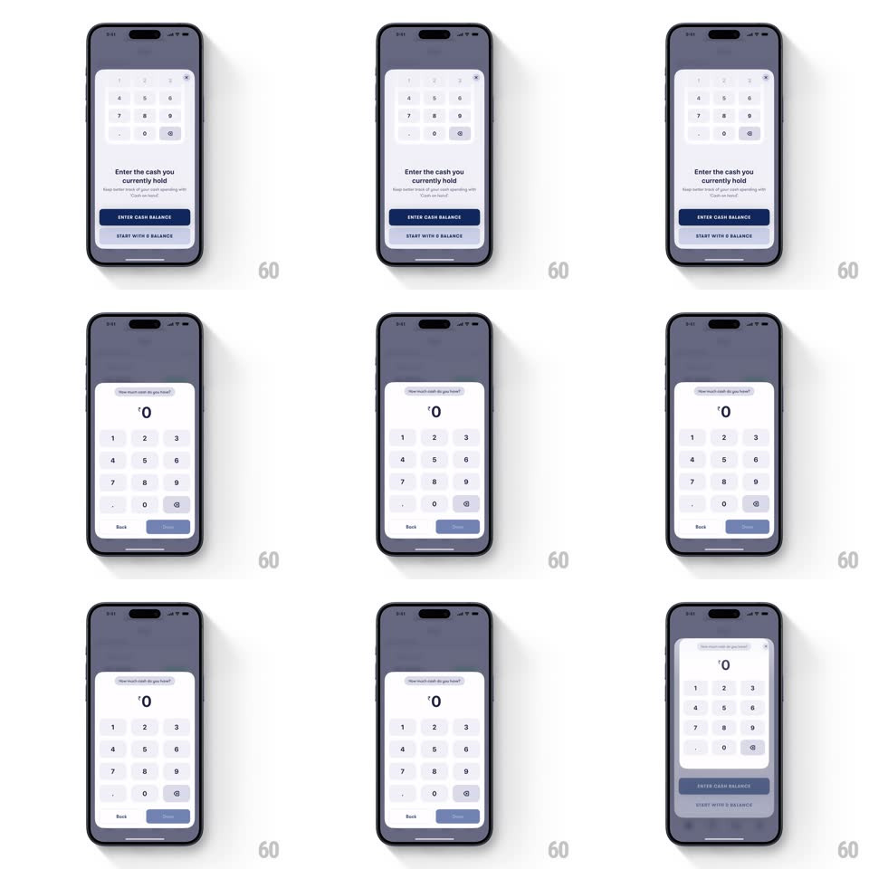

Media
Frame-by-frame

Rebuild this interaction 1:1: Fold's cash-entry morph - the bottom sheet's keypad card expands seamlessly into a full input sheet with a large balance readout when "Enter cash balance" is tapped, and morphs back on confirm.

Rebuild this interaction 1:1: Fold's cash-entry morph - the bottom sheet's keypad card expands seamlessly into a full input sheet with a large balance readout when "Enter cash balance" is tapped, and morphs back on confirm. ## Integration Integration: stack-agnostic spec - springs given as stiffness/damping, timed motions as duration + curve; map every value to your framework and animation library of choice. ## Scene Dimmed home screen behind a bottom sheet: first state shows a compact numeric keypad card over "Enter the cash you currently hold" copy with a navy "ENTER CASH BALANCE" pill and "START WITH 0 BALANCE" link; second state is a taller sheet with a large "Rs 0" readout at top, the keypad below, and Back / confirm pills. ## Motion spec Pattern: sheet content morph, ~400ms. - Expand: the sheet grows taller (spring ~300/26, 400ms) while the keypad grid reflows in place - its cells slide apart to their new positions (matched-geometry move, 350ms) rather than fading. - The copy block lifts and condenses into a small label above the readout (move + fade, 300ms) as the "Rs 0" value scales in (spring ~420/20). - The CTA pill splits into Back and confirm pills at the sheet's bottom corners (slide apart + fade, 250ms). - Confirm reverses the same morph back to the compact card. ## Calibration - Keypad keys keep identity through the morph - track them by position, never crossfade the grid. - The dim layer stays constant; only the sheet changes. ## Reduced motion Sheet slides between the two states (300ms) without reflow. ## Don't miss - The readout arrives after the sheet starts growing, not before. - The morph is reversible along the exact same path.